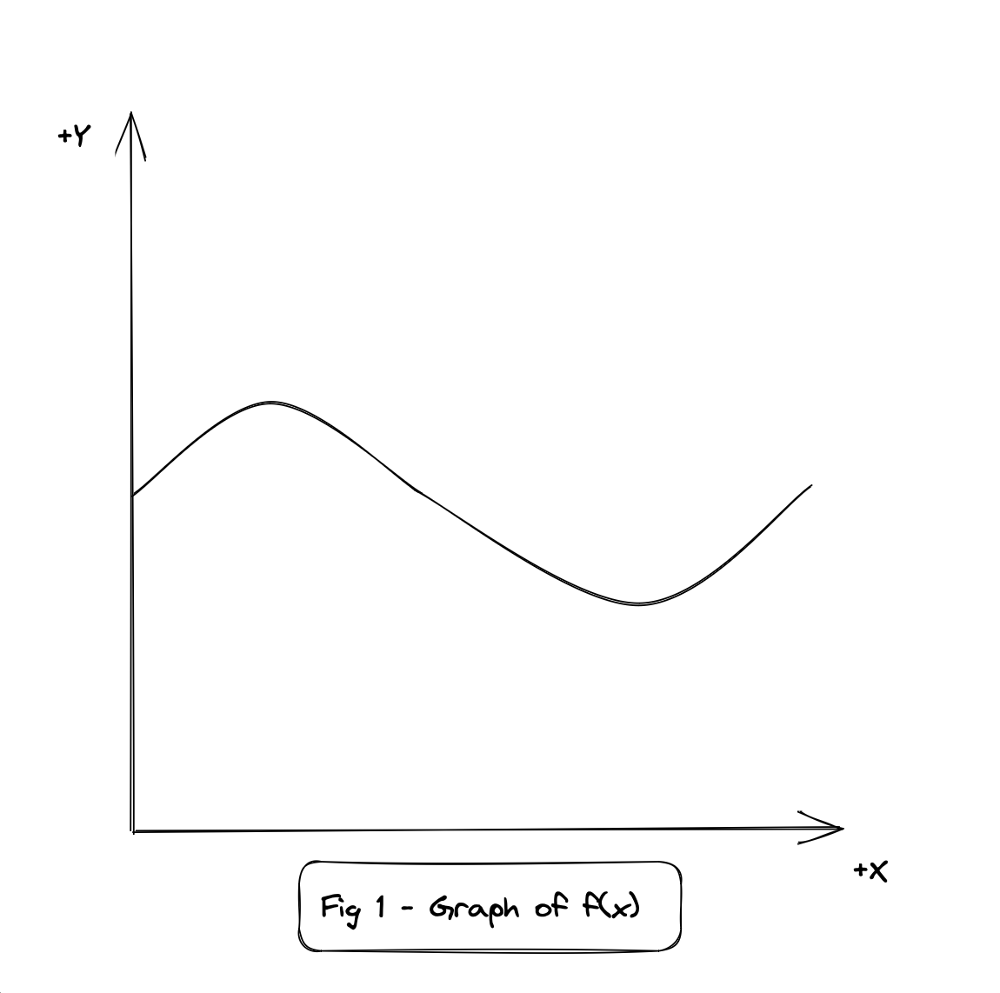
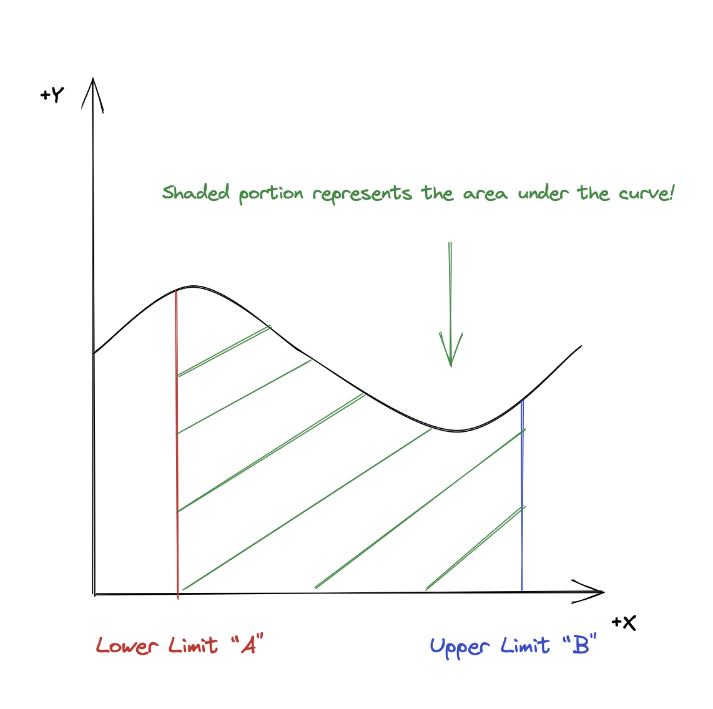
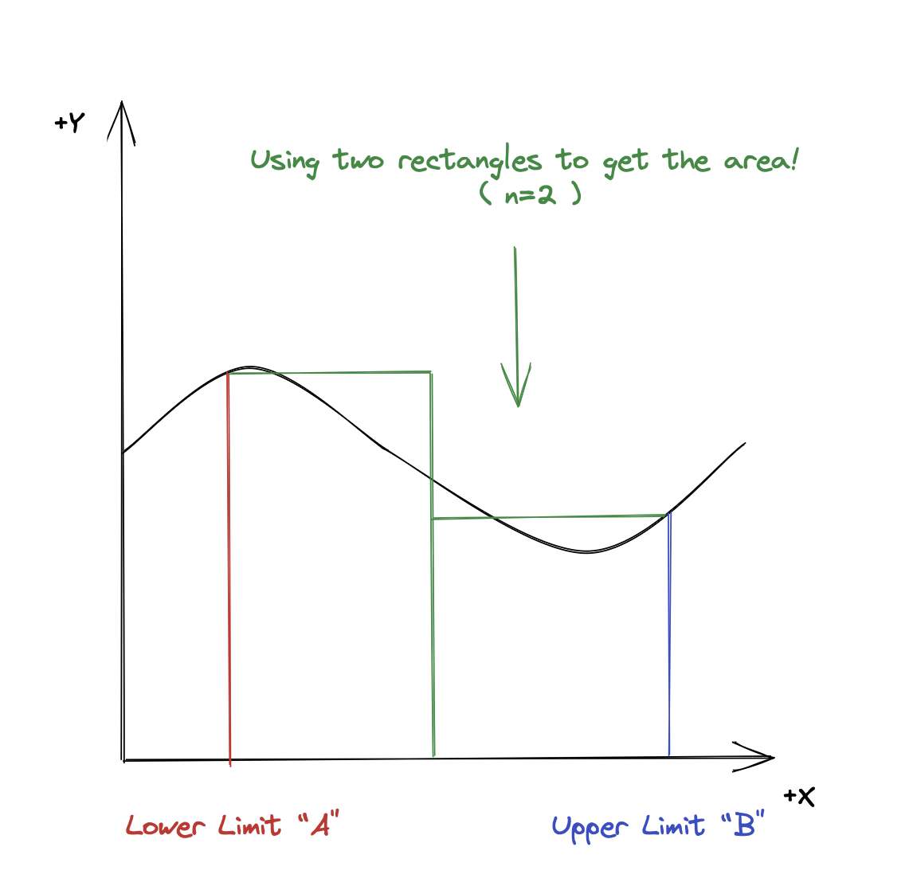
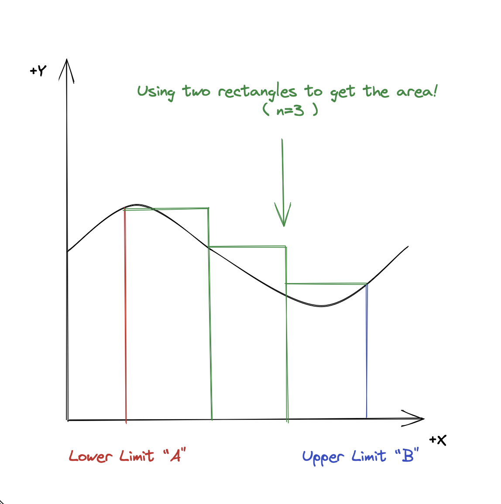
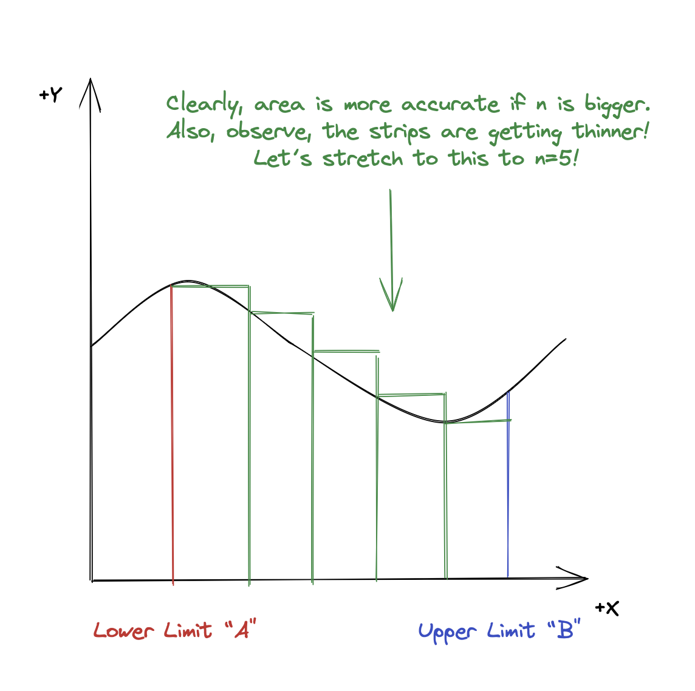
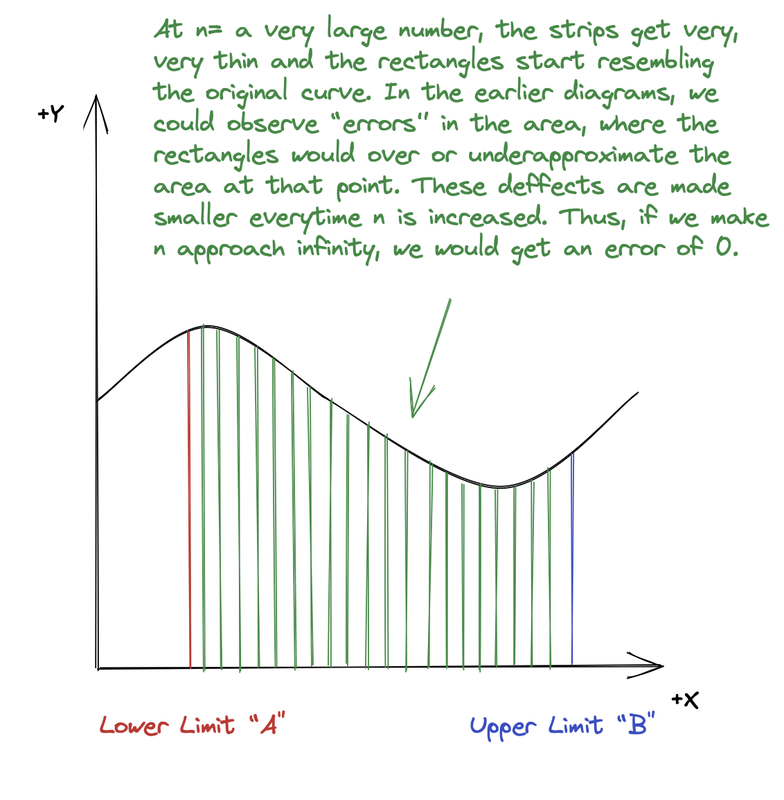

Numerical Integral Evaluator
C++ code to solve integrals via the basic definition of a definite integral.
Mathematical Prerequisites
- The function must be continuous and bounded between the limits specified.
- The function must have defined values for the upper and lower limits.
How does it work?
- This code uses the literal definition of a definite integral.
- Since the function is defined as continuous between the two intervals, it can be visualized as the area under the curve, over the x-axis.
- Since the value of the definite integral is the area under the curve, we can find the definite integral if we find the area enclosed by the curve.
- This area under the curve can be visualized as the sum of the areas of infinite rectangles. These rectangles, or "strips" are infinitesimally small. This is mathematically known as a Riemann Sum.
How does the math behind this work?
- The whole math behind this works assuming input function
f(x)is continuous between the upper boundaand lower boundb. - The first step in understanding the math behind this is to first understand that an integral represents the area bounded by the curve. Areas bounded by the curve above the y=0 are treated as positive areas and areas bounded by curves below y=0 are treated as negative areas.
- Clearly, it is obvious that determining the area of the shape is tricky- since it isn't a standard shape such as a circle or a rectangle.
- In math, everytime we don't have a proper formula to calculate an area of a thing, we try to break it down into things we do have formulae for- and that is precisely what we are about to do here.
- We are going to split this function into a very large number of rectangles, something we do know the formula for. We will call these rectangles "strips".
- Let's start by figuring out the rough breadth of the whole shape. This is quite simple. It's simply the upper bound - the lower bound, or
a-b. - If we were dividing it into say, 2 pieces, the breadth of each "rectangle" would be
(a-b)/2. However, since we are dividing it into a "large number" of pieces, we can simply say the width of each "small rectangle" is(a-b)/n, where n represents this "very large" number. - That was the simple part. Now, comes the hard(er) part. Now, we need to figure out the height of each of the rectangles, which you may notice is different for each rectangle, unlike the width, which was common to all.
- No worries! We can still generalize the area of one of these rectangles by looking at a pattern.
- We'll start off with the first rectangle, which has a height \( f(a) \). Now we go to the second rectangle, which has a height of \( f(a + \text{width}) \). Then we go to the third, which has a height of \( f(a + 2 \cdot \text{width}) \) and so on.
- Clearly, we can represent the general height of the sum as follows:
- Since we know that the area of a rectangle is height times it's width, we can re-write as
- Since area(s) are additive and the signs are automatically adjusted, we can represent the integral as a sum of the areas of the smaller strips.
- Results are more accurate when the number of strips are bigger and the width of the strips is incredibly small. So, we take this to the extreme to take n as the largest possible number, infinity. We are splitting the curve into an infinite amount of infitessimally thin strips to get an accurate result. We simulate this in c++ by taking a very, very large value of n.
- We can observe this visually by seeing the difference between a few test values of n. For the first example, we will take n=3.
- Clearly, n=3 had a more accurate area result compared to the area obtained by n=2. Let's explore this further (n=5) to see it more clearly.
- So, observing this, we can say that there is an inverse relation between the number of steps "n" and the error. So, if we make n tend to infinity (make n very, very large) then we should be left with an error that approaches zero.
- We can write this mathematically by taking the limit of the sum, where n approaches infinity.
- Finally, we can say that the width of each of these strips is the total width
a-bdivided by the number of stripsnto give the width as(a-b)/n. Substituting this in the original expression gives us the output- - Since we've established that the area under a curve is equal to the integral of the curve, we can say that



Heightr = \( f(a + (r-1) \cdot \text{width}) \)
Arear = width × heightr = width × \( f(a + (r-1) \cdot \text{width}) \)
Area = \( \sum_{r=0}^{n} \text{area}_r \) = \( \sum_{r=0}^{n} \text{width} \cdot f(a + (r-1) \cdot \text{width}) \)



Area = \( \lim_{{n \to \infty}} \sum_{r=0}^{n} \text{width} \cdot f(a + (r-1) \cdot \text{width}) \)
Area = \( \lim_{{n \to \infty}} \sum_{r=0}^{n} \frac{(a-b)}{n} \cdot f\left(a + (r-1) \cdot \frac{(a-b)}{n}\right) \)
\(\int_{a}^{b} f(x) \, dx = \lim_{{n \to \infty}} \sum_{r=0}^{n} \frac{(a-b)}{n} \cdot f\left(a + (r-1) \cdot \frac{(a-b)}{n}\right) \)
How to run it?
- The file is in C++. It requires you to have the GNU C++ compiler (doesn't need to be GNU, but it's tested on GNU) so that it can be turned into an executable for your computer to run.
- Assuming you already have GNU, open up your terminal of choice and put in the command
g++ integral.cppin the directory where you've saved the file. (You can use thecdcommand to navigate through your directories.) - Assuming the last step went smoothly and without errors (which it should), you need to type in
./a.out (function) (upper_bound) (lower_bound) --increment (increment_steps_value) --simpson --trapezoid. And it should calculate. Note that the increment flag is optional and it is set to 1,000,000 by default. Bigger numbers make the result more accurate, but evaluation time will also increase. The simpson flag is also optional (specify it to evaluate by simpson's rule, but this is disabled by default). The trapezoid flag is also optional (specify it to evaluate by the trapezoidal rule- but this is also disabled by default). Please note that you can only use one mode at a time.
Supported Functions?
Trigonometric Functions
- sin(x)
- cos(x)
- tan(x)
- cosec(x)
- sec(x)
- cot(x)
- asin(x)
- acos(x)
- atan(x)
- sinh(x)
- cosh(x)
- tanh(x)
- asinh(x)
- acosh(x)
- atanh(x)
Exponential and Logarithmic Functions
- log(x)
- ln(x)
- log(base)(x)
- gamma(x)
- lgamma(x)
- exp(x)
- sqrt(x)
- exp2(x)
- exp10(x)
- cbrt(x)
Miscellaneous Functions
- abs(x)
- sgn(x)